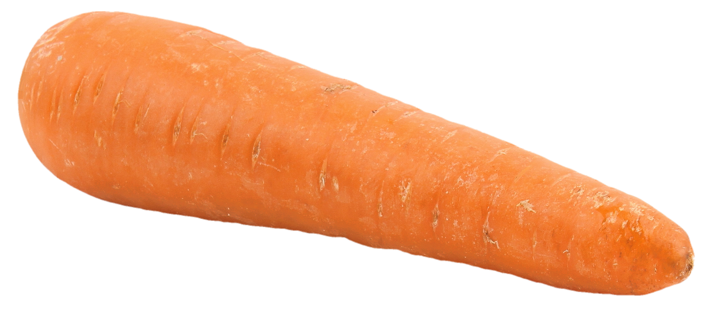

This is for anyone who has not yet lived in a place where it snows.
Since you haven't done it yourself, we will teach you how to build a snowman in just steps.
It really isn't hard.
Click on image to begin
Most snowmen have only three balls that make up the body: the largest one goes on the bottom, the medium one goes in the middle, and the smallest, which is the head, goes on the top.
Most snowmen have three buttons on each mounds of its body, excluding the head.
The charcoal bits will make up the eyes and the mouth.
 The carrot is going to be the nose. This is very important, as it's one of the most distinguishable elements of a snowman.
Top hats are popular choices for snowmen. Beanies also work.
This step is also important because it's the final touch to complete the body of the snowman. Two twigs have to be placed on both sides of the middle mound. They will be the snowman's arms.
If you followed all the steps, then your snowman should look great for the holidays!
We hope you learned something new!